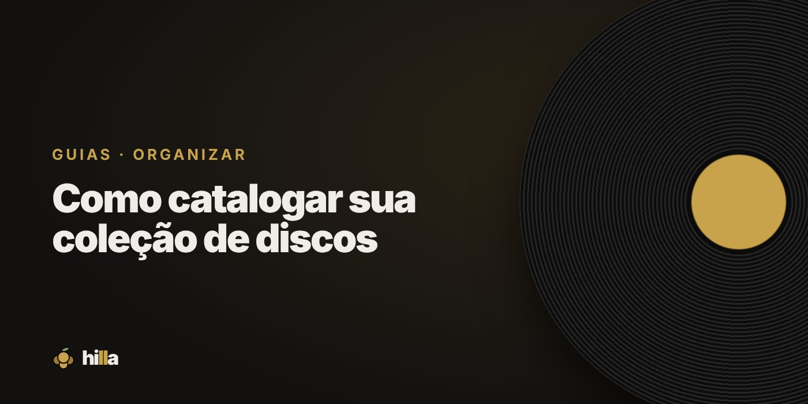

Guias para colecionadores de discos
Como começar, catalogar, organizar e cuidar da sua coleção de vinis, CDs e fitas.
Começar

Do primeiro toca-discos ao primeiro disco: o caminho mais simples para começar sem gastar à toa.

Som, preço, praticidade e experiência: o que pesa na escolha do formato.

O que entra no custo, onde dá para economizar e como montar um orçamento realista.
Dez clássicos fáceis de achar, nacionais e internacionais, e como escolher os seus.
Comprar
A escala de conservação, o que olhar no disco e na capa e como comprar online com segurança.
Sebos, lojas, feiras, Discogs e marketplaces: onde cada tipo de disco costuma estar.

Prioridades, de onde tirar ideias e como usar a lista na hora da compra.
Organizar

O que anotar de cada disco, como descrever o estado e qual o melhor jeito de manter tudo em dia.

O que a planilha faz bem, onde ela trava e quando vale migrar para um app.

Discogs, apps de catálogo, planilha e Hilla: o que cada um faz melhor.

Alfabética, por gênero, por ano ou por cor: as formas de organizar a estante e qual escolher.

Estante, ordem, caixas, encartes e catálogo: como manter a coleção de CDs em dia.
Cuidar
Ouvir
Colecionar

Número de catálogo, selo, matriz e país: as pistas que dizem qual edição você tem.

Os álbuns essenciais, o metal brasileiro e como organizar a coleção por subgênero.

Onde procurar, como montar alertas e como não pagar caro demais por um raro.